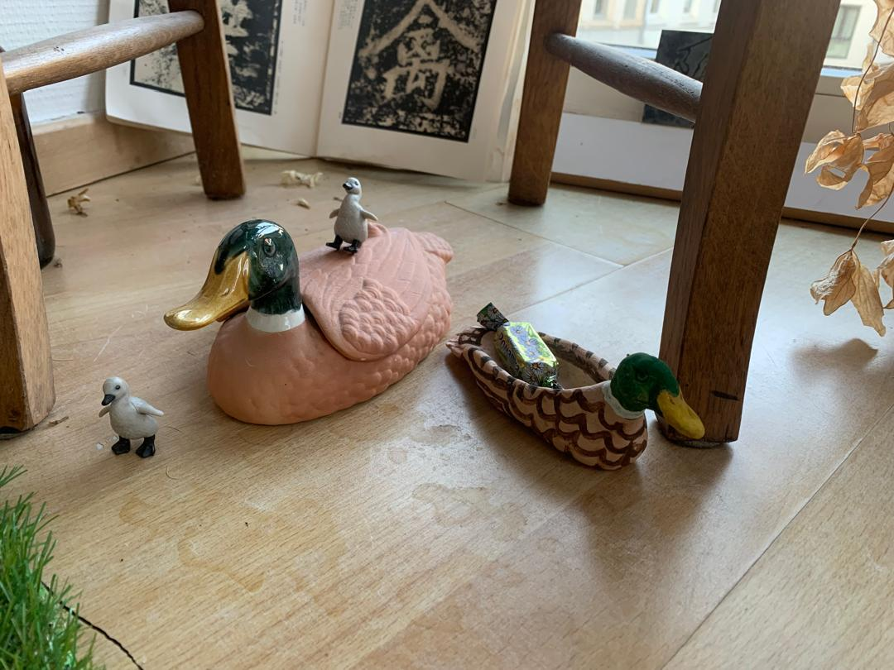

Andreas Vladimirovich
There were different occasions on which I had to move. Earlier ones were caused by my parents’ emigration journey, the later ones by my own aspirations to pursue painting. Every time I ended up carrying with me a cup, handed to me by my mother before I left to Belgium. This cup has been a gift from my mother’s family in Kazakhstan – a local porcelain production. On the bottom of the cup right next to the national steppe eagle it says “Germany Style. 20 Year Guarantee” in English.
Although I never liked the way the cup looks, its national clarity touched me on an emotional level. I kept it because I admired its self-awareness. The cup was understanding of its being, made aware of it by the surrounding environment. Consequently, the cup managed to be reunited with its predetermined origin when we lived in Germany.
Another case of acute self-discovery I have witnessed in my father. When the Soviet Union started to waver and the prospects of stability declined, my father obtained a fake document stating his mother was of Jewish descend. At the time it was the easiest solution to leave the country, following the route to Israel. The idea was to go to America with a transit in Vienna. Through means that I am too worried to put into words, my father crossed the border. Soon his entry to the states was rejected and he was bound to stay in Austria.
He realized quickly that his new identity might complicate a prosperous development in Austria and discovered a passion for Christ. He joined the incredibly friendly local Jehovah Witnesses. The language courses were a plus.
Later when he was already decently integrated – working, speaking German and owning a citizenship – he went on a working trip to Kazakhstan where he met my mother. She was an exquisitely trained ballerina from a rural Muslim family. After dating for three weeks, they got married.
It is there that he became aware of his other before unnoticed nature. He was Muslim. The following years he spent reading the Quran, through my birth till my high school. Nowadays he doesn’t practice strictly, but partakes in Ramadan yearly.
Epos Manas
The onset of awareness can also happen on a level of a nation. My last June I dedicated to reading the national Kyrgyz epos Manas, intrigued by it being the longest poem in the world.
After the collapse of Soviet Union, the new Kyrgyz state has decided to use Manas as a foundation for rebuilding the national identity. Apart from the sheer artistic value that the epos carries, it is also an important documentation of the historical timeline of its people and their land.
To me, the biggest value of the epos is in its process. I took the liberty to translate two verses:
Issyk-Kul was splashing below.
Probably the god Koke-Tengir (Tengri),
Collected his last tear,
Drop by drop in his palm,
Gave it to the Kyrgyz to last centuries.
Already a few verses later the same lake was given to the Kyrgyz not by the ancient Turkic Sky-God but by another important someone:
Holy mountains of Ala-Too,
Valleys, rivers and jailoo (pasture),
Our Issyk-Kul – like paradise,
Given to Kyrgyz by Allah.
If I was local
A few months ago I was entangled in an argument with my mother after complaining about my identity insecurities as a second generation immigrant. Her position was that it is mainly an issue of my outlook and that I should view myself as a child of the world, belonging everywhere in Europe.
To mind comes an answer of Belgium’s prime minister to a question from a German newspaper:
“If he lived in our country, even Obama would still be a foreigner.”
Comfortable or Convenient
There is a general believe, that belonging comes from knowing the local language. I personally can think of at least two arguments to counter this – one by quoting the Belgian prime minister, and the other by sharing an incident from my family’s last New Year celebration.
There were two things special about that New Year’s Eve. The first being that the event happened in my parents’ new apartment in a rural city that I have never visited before. This city is practically a small town in western Germany, that does not even have a grocery store. Before it has been established as a military base for American soldiers and now it has been transformed into a university campus and a few residential living blocks. The low price of rent has been an attraction for the newly growing Ukrainian community. The town itself has an already established Chinese community, whose reasons for living there we still do not understand. On the Robinson Street in the residence New York, my parents organized a celebration for neighbors, friends, me and my companion.
The second special occurrence was that I brought with me my boyfriend, who would meet them for the first time.
Among the guests have been my parents’ friend Alex, who is a newer friend and whom I don’t know too well. Our conversation has started rather forced, initiated by the sitting situation. Alex was seated right across from me. It is also important to note, that the language barrier has been rather strong among the guests – some spoke only Russian, some managed a form of English, others spoke no Russian at all, and German turned out to be in absolute minority.
Alex spoke Russian and Ukrainian, but struggled with English and German, so seating him across from me seemed like a good idea; I could both entertain him and translate if needed.
The conversation took a friendly but predictable turn. I was asked about my boyfriend and our new relationship. He asked me how I experienced living together, and I answered “very comfortable – очень удобно”. It was a long lasting mistake.
Alex, who was becoming increasingly poetic after several drinks, was appalled by my coldhearted reply. In retrospective I realized that a big chunk of misunderstanding has been caused by my ignorance of the intricacies of meaning. My “comfortable – удобно” I have related to the German “Wohl” or the English “comfort”, both words associated in my head with things warm, cozy and somehow even fuzzy.
The Russian “comfortable – удобно”, which is the most straightforward translation, carries a meaning of cold convenience, a utilitarian approach. The Ukrainian “зручно” even has a note of manual labor. After this reply Alex was convinced that we started our relationship for wrong reasons, and I became once again convinced of my misplaced internationalization.

Three types of adaptations
I hold the opinion that most people who come to live in Antwerp come here without an intrinsic beer preference. I can base this conviction firstly on the observation I have made of my international friends and secondly on the natural law of substitution and imitation. The beer preference is a culminated taste.
A good way to attempt to be in place for someone who is out of place is to imitate the local customs and behaviors. Then of course, to preserve yourself within this new environment you rely on substitutions – why would there be a need for mixmarkts and amazing orientals otherwise? If the orientals at least offer some sort of novelty to the local residents, then the mixmarkts just mainly provide a complex sauer(kraut) selection. The deterioration can reach as far as me buying fake Mozartkugeln similar to the ones I used to eat in Vienna, which in themselves were already a replica of the ones from Salzburg.
I can think of three instances where I became aware of the importance of adaptations among those who search their place. They spiral from deliberate to undeliberate, representing a progressively intimate revelation.
Firstly – adaptation can serve as a substitution. One of my mother’s friends who owned numerous cd collections had a rather catchy adaptation of the song Brother Louie from the German band Modern Talking. Sergey Minaev, a Soviet singer and musician, supplied the German version with Russian lyrics of his own writing to meet the need of the Russian speaking audience. The music stayed unchanged:
I chose one way to go to south,
My only route is to Crimea.
I really bloom next to the sea,
Thus I confess.
Time has proven this version to have a stronger prophetic power than the German original.
I dare to assign this accidental relevance to the particular situation in which the lyrics have been written. Which would be by a Russian for Russians in Russia, covering what Minaev thought to be a particular lack in the music industry at the time – great songs that his people could not enjoy because of a language barrier and difference in mentality. A worthy reason for creation in my humble opinion.
Secondly – adaptation can be an imitation, or what is normally called ‘a parody’. It is an insight that I obtained after watching the film Zelig by Woody Allen. Zelig is a mockumentary about Leonard Zelig, a man with an extraordinary capability to assimilate into any group of people.
Here I can even say that I obtained two revelations at once – one I will try to sketch out in the next paragraphs, and the other is that I quite misunderstood the film’s official intention.
Perhaps due to my IP address, one of the first things to come out after searching the film is an article written by a lecturer from KU Leuven. To my surprise the interpretation provided by her and to a certain degree by Woody Allen himself differed radically from my own thoughts on the movie. They related the film to the banality of evil, somewhat as a visualization of the dangers of conformity in regards to totalitarianism.
The only danger of conformity I could read from the movie was the usual humiliation of becoming an undeliberate parody. Why that would be Zelig I concluded from his self-introduction: As a boy, Leonard is frequently bullied by anti-Semites. His parents, who never take his part and blame him for everything, side with the anti-Semites. They punish him often by locking him in a dark closet. When they are really angry they get into the closet with him.
In my head Zelig was a tasteful visualization of the tragedy of displacement among other issues, a motive I see very often in things that have little to do with it.
Already from this introduction I thought I can read everything – the displacement of the family, Leonard’s difficulty of integration during his childhood and the pressure of assimilation coming from his parents. And to remedy all that the developed skill of imitating others. This is what I thought made the character comedic; Zelig is funny because he is unconscious in his imitation, achieving the absolute mastery of camouflage not through a specific strategy but just through internalized trauma. What can be more hilarious than that?
But even this case is only half as ridiculous as craving a particular fermentation of a particular vegetable in an alien country. And more than that the Russian Mozartkugeln from the store of Volga-Germans in Belgium. That would be a parody of self and our third form of adaptation.
